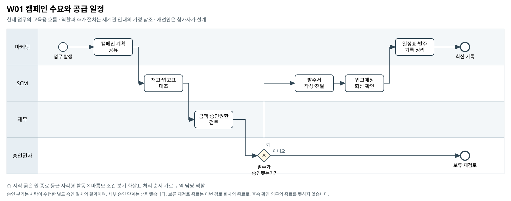

캠페인 수요와 공급 일정
캠페인으로 늘어날 주문을 재고·입고 일정과 함께 검토할 때, 어느 부서 사이에서 확인과 결정이 늦어지는가?
BPMN 2.0 편집 원본 · 도식 크게 보기 · 8개 도식집 PDF


승인 분기는 사람이 수행한 별도 승인 절차의 결과이며, 세부 승인 단계는 생략했습니다. 보류·재검토 종료는 이번 검토 회차의 종료로, 후속 확인 의무의 종료를 뜻하지 않습니다.
기존 자료의 단초
- Masil의 캠페인 이후 주문 급증, 품절, 긴급배송과 반품이 발생한 상황이 제시돼 있다.
- 재고·주별 판매·발주 자료는 회사 실제 규모이며 커머스·마케팅 거래는 대표 표본이다.
- 평시 재고 발주는 SCM 승인 사항이다. 현금 하회 예상 구간에 유출되는 신규 약정은 금액과 종류를 불문하고 그룹 CEO 승인이 우선한다.
- Masil 단독 기준 매 영업일 일말 가용현금이 30억원 미만인지 판단한다. 기간 평균이나 그룹 지원을 전제한 잔액으로 대체하지 않는다.
주최 측의 교육용 업무 가정
- [교육용 가정] 마케팅팀이 캠페인 계획을 공유하고 SCM·재무가 파일과 회의로 발주안을 검토하는 간단한 현재 흐름을 표현한다.
- [교육용 가정] 승인 결과를 사람이 확인한 뒤 SCM이 발주하고 입고 회신을 기록한다. 도식의 종료는 발주·회신 기록 완료이며 판매 성공을 뜻하지 않는다.
- [범위] 캠페인별 수요예측법, 적정 발주량, 자동화 방식은 참가자가 정의할 영역이다. 여기 나열한 보완 항목은 선택 예시다. 필수 확장과 다른 부서 영향의 기준은 A01을 따른다.
미해결 지점
- 마케팅 표본 주문을 회사 전체 SKU 수요로 환산할 근거가 없다.
- 캠페인별 미래 수요 약속과 SKU·입고일을 연결한 계획표가 없다.
- 발주 변경 요청, 공급자 회신, 승인·미승인 결과의 사건 이력이 없다.
확장할 때 생각할 질문
- 어떤 캠페인 또는 SKU부터 수요·공급 확인을 연결할 것인가?
- 현금 제한이 있는 발주를 누가 언제 결정해야 하는가?
- 현재 지연이 가장 큰 확인 절차를 어떤 증거로 고를 것인가?
- 발주가 어려울 때 캠페인 시기·판매량·상품 구성·생산계획 중 무엇을 조정하며, 다른 부서의 목표·제약은 어떻게 반영할 것인가?
보완할 수 있는 데이터
- 캠페인별 SKU 수요 가정표와 그 작성자·기준시점
- 발주 변경 요청 및 공급자 입고예정 회신
- 승인 요청·회신·보류 이벤트와 사유
관련 원본 자료
- 00_common/Business_Process_Map.md
- 00_common/data_dictionary.md
- 00_common/approval_authority_policy.md
- 00_common/mkt_meeting_notes_ms.md
- 02_masil/master/m_campaign_ms.csv
- 02_masil/marketing/mkt_orders_ms.csv
- 02_masil/inventory/sku_inventory_ms.csv
- 02_masil/inventory/sku_weekly_sales_ms.csv
- 02_masil/inventory/sc_purchase_orders_ms.csv
- 02_masil/financials/covenant_terms_ms.md
- 00_common/calculation_definitions.md
그림의 관계가 원본 파일의 모든 연결키 제공을 뜻하지는 않습니다. 원본에서 확인한 관계와 추가한 매핑·가정을 구분하십시오.